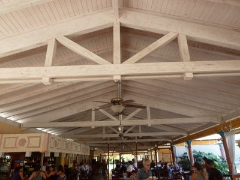
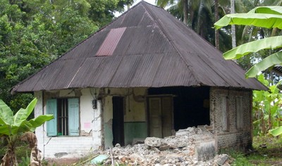
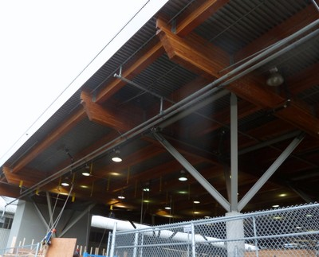
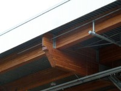

Estructura de madera con techo de cubierta ligera [RWO1]
Vigas de madera o cerchas y viguetas, soportando una cubierta de techo ligero, e.g. hojas corrugadas. También incluye estructuras de techo curvo. e.g. techos de bóveda.

Vigas de madera y viguetas soportando techos ligeros, Nueva Zelandia (W. Clark)

Techo de madera y estructura de cercha, Cuba (S. Brzev)

Estructura de madera soportando tablones de madera y techo de hojas de acero, Chile (S. Brzev)

Estructura de cercha de madera soportando techos de metal ligero, Chile (S. Brzev)

Estructura de techo de madera soportando metal ligero, Indonesia (J. Bothara)

Techo de vigas y viguetas de madera, Peru (S. Brzev)

Una iglesia con techos de bóveda de madera en Curico, Chile dañado en el terremoto de 2010 Maule, Chile (M.O. Moroni)

Vigas de madera laminada curvas soportando techos de metal ligero, Canada (S. Brzev)


Una estructura de techo que consiste de cubiertas de metal soportads por viguas de madera curvadas, Vancouver, Canada (S. Brzev)